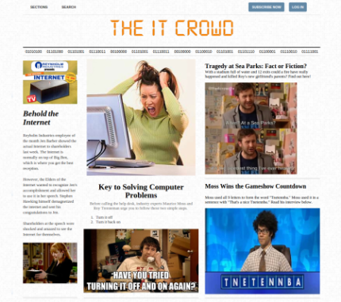
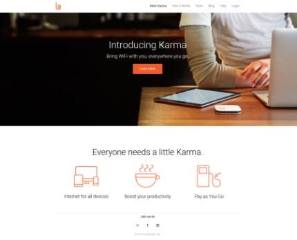

In this project, we used Google Chrome's Developer tools to modify the HTML and CSS on our computers.
I made mine after one of my favorite shows: The IT Crowd.
In this project, we were given the Karma webpage to try to clone.
I learned HTML and CSS throughout the process.
